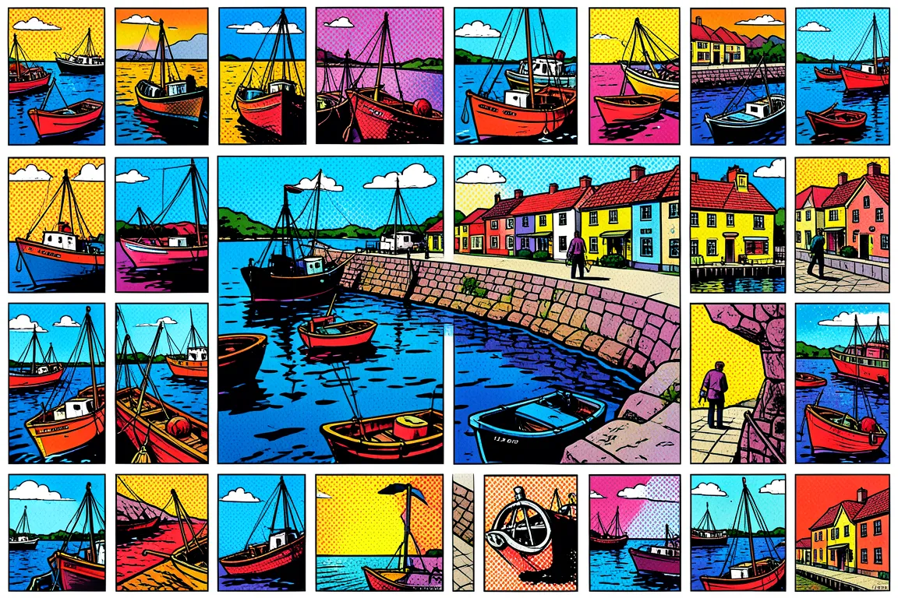

painting · 1956–1975 · also: Pop painting, Ben-Day dot painting
Pictures made from the images of the mass market: comics, adverts, packaging and stars. Flat colour, hard outline, repeats and printing marks show that the picture is a product, not a vision.

Core thesis
Everyday mass images are the subject of the age, and a painting can take their look, their flat colour and their repeat, without comment and without the artist's hand.
Design principles
Take the subject from mass media: a comic panel, a can, a star, an advert.
Paint flat, opaque colour in large fields, with a thick, hard black outline of 5–15mm.
Use a limited set of bold primary and secondary colours, at full saturation, on a white or flat ground.
Copy the mark of the printing process: Ben-Day dots of 3–8mm in a regular grid, or a screen-print registration slip.
Repeat the image in a grid of 2 to 50 copies, with small changes in colour between them.
Crop the image hard, and enlarge it to a scale of 1 to 3m so that a small thing is monumental.
Keep the surface cool and mechanical, and hide the gesture and the personal touch.